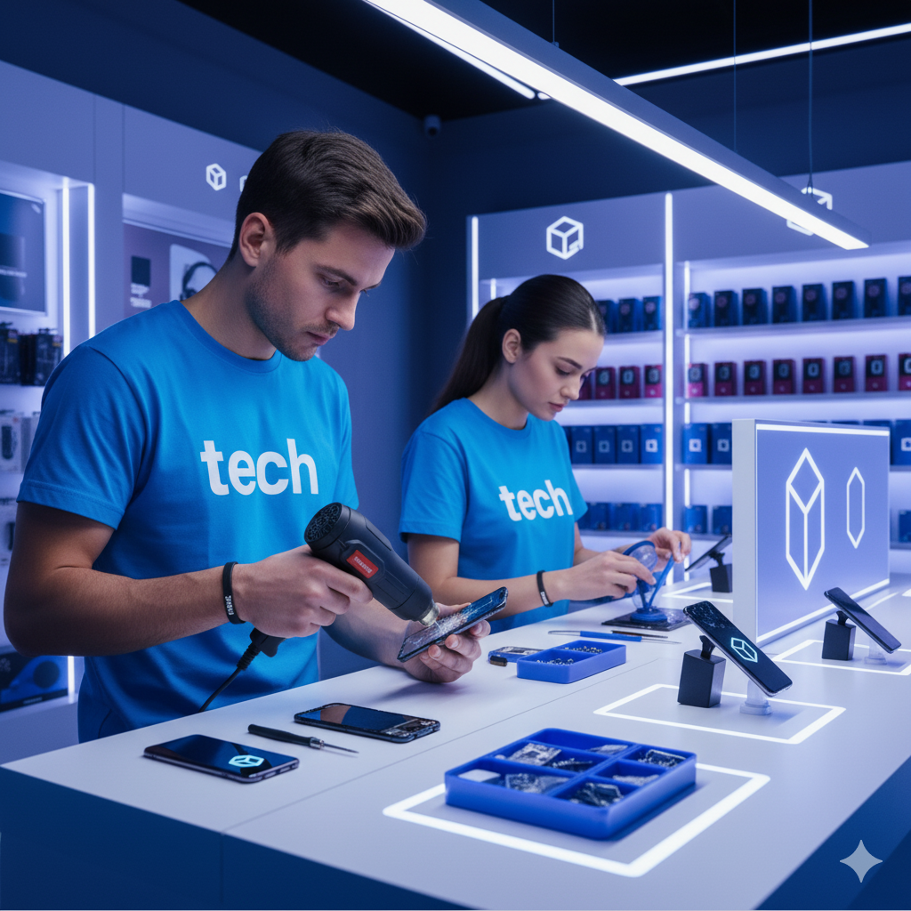

Troca de tela
A substituição de telas danificadas é um dos serviços mais procurados em nossa assistência técnica. Trabalhamos exclusivamente com peças originais e compatíveis, garantindo qualidade de imagem, sensibilidade ao toque e durabilidade idênticas às de fábrica. Nossa equipe realiza a troca com extremo cuidado, utilizando ferramentas adequadas e técnicas de montagem seguras para que seu dispositivo volte a ter o mesmo desempenho visual de quando era novo. Além disso, oferecemos garantia de serviço e peça, proporcionando total segurança e confiança no reparo.